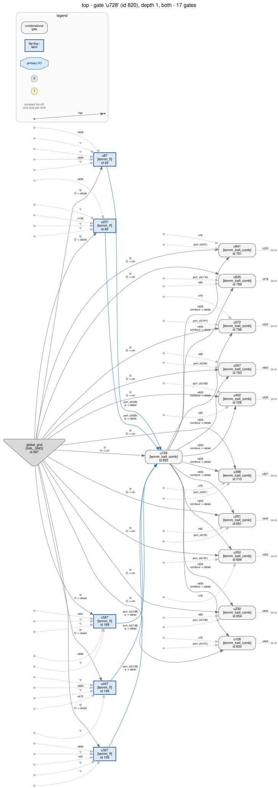
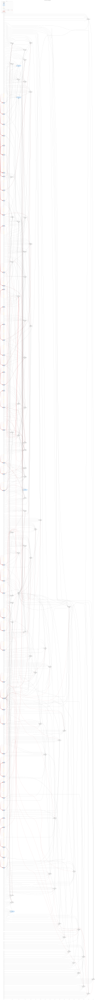
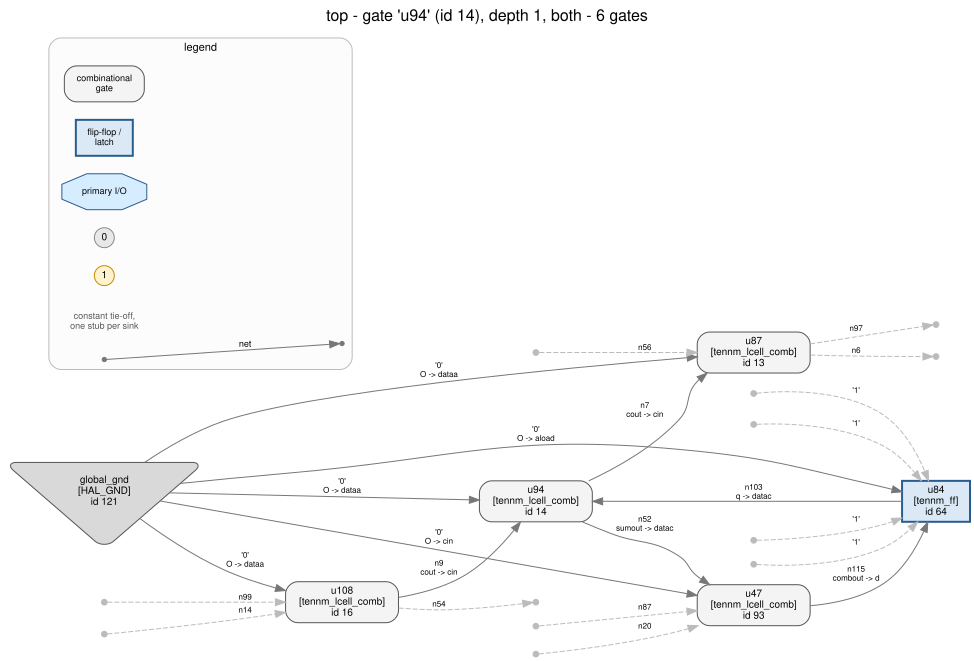
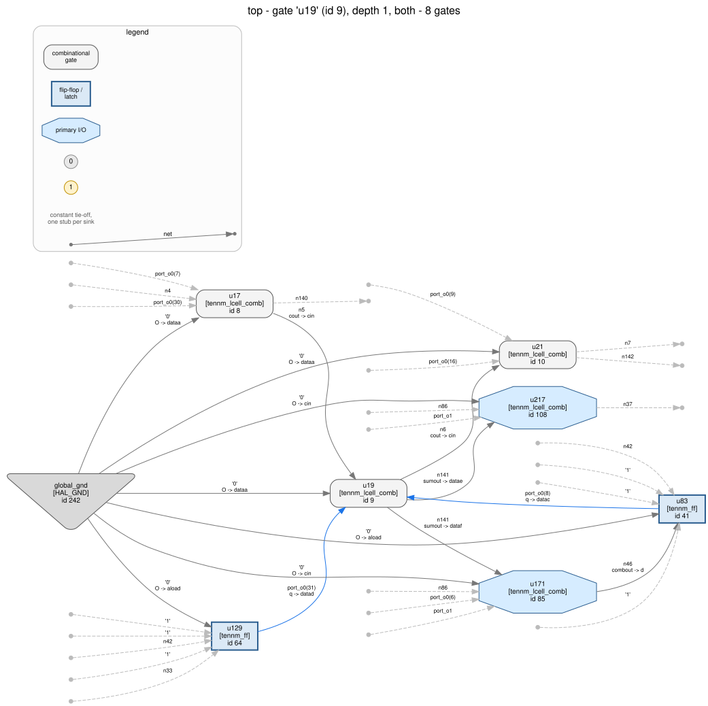
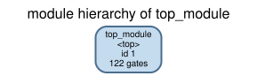
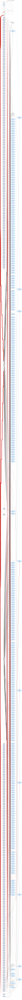
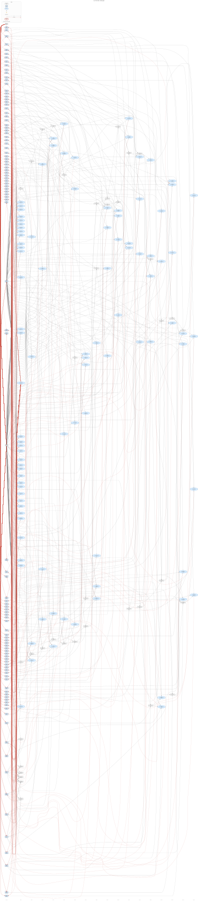

--const-hub. No carry chain means no ripple means no depth.Walkthrough 16 — the capstone. Five blinded netlists, one fixed procedure, no names, no answer key until the calls are written down. Then the answers, and an honest score.
Five anonymized exports sit in
cores/. A procedure fixed in advance in
spec.md runs over all five without reading
anything else. The conclusions get written down. Then
ground_truth/ opens and
the calls are scored — including the ones a tool got wrong, which is the
part worth staying for.
hal_crypto could not do, and they
were filed as #101
and #102
rather than fixed here — a capstone that tunes the instrument it is
calibrating measures nothing. Both have since been fixed, and every number on
this page has been re-derived against the repaired tool, because a measurement
that is not re-taken is an anecdote. The tool alone scored 3 of 5
blinded when this walkthrough was written and scores 4 of 5
now; section 7 keeps both numbers and says what moved
between them.
Five cores. Four are the designs of walkthroughs 11, 13, 14 and 15, re-synthesized from scratch under neutral top-level names into their own Quartus revisions, so no committed file here is a copy of a file committed there. The fifth is new RTL written for this walkthrough and for no other purpose, and it is not cryptography. Which one is which is not recorded anywhere the blind pass can reach.
Walkthrough 12's PRESENT-80 datapath is deliberately absent. An S-box that matches a published table by name is the one case where the answer arrives without any method at all, and a capstone made of that case would measure nothing.
Every export goes through the anonymize.py of walkthrough 10,
byte for byte — grading against a weaker anonymiser than the one the series
already publishes would be grading nothing. What survives is what a reverse
engineer genuinely has: gate types and their pin names, the
lut_mask parameters, the connectivity exactly, top-level port
direction and width, and the gnd/vcc housekeeping
nets.
What does not survive is the module name, every port name, every net name,
every instance name — and, the part that turns out to matter,
every internal vector declaration. Quartus keeps the RTL's
wire [15:0] x_sum;, which hands you the word boundaries for free. A
netlist recovered from a bitstream has no such thing, so the blinding splits
every internal vector into unrelated scalar wires.
analysis.py never opens a path under
ground_truth/, and check.py asserts that with a regular
expression over analysis.py's own source. It is a crude check on
purpose: an assertion that needs interpretation is one that stops being run.
The procedure is six steps per core — census, shape, state partition,
nonlinearity, hal_crypto identify, and then a call. Steps 1–4
never consult step 5, and step 6 is a pure function of steps 1–5. The point
of that ordering is walkthrough 03's: two methods that never read each other
agreeing is evidence, and them disagreeing is information.
Step 6 is a table, written into spec.md
before these exports were analysed. Rules are tried in order and the first whose
antecedent holds decides the family.
| id | antecedent | family | style |
|---|---|---|---|
R1-lattice | identify reports lattice-ntt, or the chain census contains an add and a subtract of the same width, both over two non-constant operand vectors | lattice-ntt | pqc-style |
R2-sponge | no carry chain anywhere, and ≥ 8 cells each a pure XOR of exactly 5 flip-flop outputs, with pairwise-disjoint sources | sponge | undetermined |
R3-spn | an S-box of ≥ 4 bits at tier exact or xor_constant, in ≥ 4 instances | spn | classical-style |
R4-arx | ≥ 2 carry chains of the same width ≥ 8 that each add two operand vectors, and combinational depth ≥ 10 | arx | classical-style |
R5-stream | an autonomous feedback register of ≥ 32 stages with feedback of degree ≥ 1, possibly only under a held mode net | lfsr-stream | classical-style |
R6-none | none of the above | none-detected | undetermined |
Confidence is a second fixed rule: high when the structural
rule and hal_crypto name the same family, or when nothing fired and
no step produced any cryptographic evidence at all; medium when
the structural rule fired and the tool disagreed. And one clamp: when the
deciding rule quoted the tool's verdict, the call may not come out more
confident than the tool it quoted.
cout → cin wire
and unmissable. What arith.adders adds is an evaluation of
each one, so a + b and a + 1 are distinguishable. By
the end of section 3 that distinction will be the only thing in the entire
census separating the decoy from the block cipher.
The census first, all five at once, because the shape of this table is the first thing anybody would look at:
| core_a | core_b | core_c | core_d | core_e | |
|---|---|---|---|---|---|
| instances | 866 | 120 | 611 | 241 | 1209 |
| flip-flops | 207 | 49 | 301 | 104 | 299 |
| ALM cells | 659 | 71 | 310 | 137 | 910 |
| carry chains | 0 | 1 | 0 | 2 | 10 |
| DAG levels | 5 | 18 | 3 | 18 | 43 |
| register components | 200, 6 | 31 | 288, 12 | 64, 32, 7 | 288, 10 |
Three things are already visible. Two cores have no arithmetic at all and are two and four levels deep — wide, shallow, logic-only. Two are seventeen levels deep behind a carry chain. One is forty-two levels deep behind ten of them. And the register components say how many machines each core is: core_d is the only one that is three.
--const-hub. No carry chain means no ripple means no depth.207 flip-flops in two components: 200 and 6. Two hundred bits of state, and six bits of something driving them one way. Zero carry chains, four levels of logic. Whatever this computes, it computes it in one wide pass and not by adding.
The nonlinearity step is where it opens up. Of 659 cells, forty are a pure XOR of exactly five flip-flop outputs, and those forty five-element source sets are pairwise disjoint — together they cover 200 bits exactly once. Another 200 cells are a pure XOR of eleven flip-flops.

lut_mask is a parity. Forty of these, disjoint, is a layer.theta, and walkthrough
14 builds a whole 5 × 5 × 8
lane geometry out of exactly this observation.
The other half of the picture is a refusal. 200 of the 207 next-state cones cannot be enumerated at all: they read more flip-flops than the exact evaluator will expand. That is not a missing measurement. A next-state function that reads tens of state bits is a diffusion layer, and the fact that it is nonlinear is why it cannot be folded into an affine form and read off.
R2-sponge fires: no carry chain, forty disjoint five-wide
parities. Call: sponge, style undetermined,
confidence medium — medium because hal_crypto identify
returned none-detected on this export and the disagreement is
reported rather than smoothed over.

The smallest core in the set, and the one that is most likely to be called wrong. It has:
Read that list again next to core_d's, three sections down. Same chain width. Same depth. Both chains read a register bank and write it back. At this magnification the two cells are the same object:

cin from the previous
cell, cout to the next.
cin from the previous
cell, cout to the next.What separates them is one operand. Driving each chain over its whole operand
space and reading the result back says that core_b's chain
adds the constant 1 — it is a counter — while
core_d's two chains each add two operand vectors, fifteen bits
wide. R4-arx requires the second and core_b has none of it.
Nothing else fires either. The shift chain is not autonomous: its head reads a pin, so it absorbs data rather than feeding itself, which is walkthrough 10's distinction and the reason a CRC is not a keystream generator. There is no parity layer, no S-box, no butterfly.
Call: none-detected, confidence high —
high because nothing produced any cryptographic evidence at all, which is the one
case where a negative gets to be strong.

hal_crypto's own chain walk found
no shift structure in core_b at all, in a design with an
eight-stage shift register in it. Its stages are tapped: every
stage also drives a capture register, so each has two successors and the walk
stopped at the first fork. The walk that found the chain here follows the
predecessor instead, which fan-out cannot break. It cost nothing here
— an open chain is not evidence of cryptography either way — but a
tapped Galois LFSR would have disappeared the same way, and that would have cost
something. Filed as issue #102 and fixed since; find_shift_structures
now returns the eight stages as an open shift_register, with the six
capture registers named as taps, and core_b's call is unchanged: an absorbing
chain is still not a generator.

301 flip-flops, 310 cells, two levels of logic, no arithmetic. 288 registers in one component and 12 in another that drives it. One cell per register and one level of depth is the signature of a design whose entire step is one LUT — the work is in the schedule, not in the logic.
The chain walk returns nothing on the first reading, exactly as walkthrough
13 reported: every stage's next
state is a load multiplexer, so "driven by exactly one register" is false for all
of them at once. Holding the external net that the most next-state functions read
nonlinearly — port_i1 under its blinded name — at 0
brings back three feedback registers of 93, 84 and 111
stages.
All three are coupled: no segment's feedback is a function of its
own stages alone. Every feedback has algebraic degree 2. One
quadratic term per segment is the whole difference between this and walkthrough
05's linear LFSR, and it is what makes R5-stream's
"degree ≥ 1" a real test rather than a formality.
R5-stream fires and hal_crypto identify independently
reports lfsr-stream at high confidence.
Call: lfsr-stream, classical-style, confidence
high.

Two carry chains, sixteen cells each, each adding two fifteen-bit operand vectors. Seventeen levels of depth, which is what a sixteen-bit carry costs. So far this is core_b with one operand more.
The state partition is what makes it a cipher. Three register components — 64, 32 and 7 — and the coupling between the two big ones runs one way: the 64-bit component feeds the 32-bit one and nothing comes back.
lut_mask has been decoded, and it is available on a
netlist with no names in it, because the direction of an edge in the register
graph is not a name.
R4-arx fires: two chains of equal width ≥ 8, both adding two
operand vectors, behind seventeen levels.
Call: arx, classical-style, confidence
medium — medium, because hal_crypto identify says
none-detected here. Section 6 is about why.
What the blind pass does not get: the rotation amounts. That is deliberate — recovering them is the whole of walkthrough 11 — but it is also, as it turns out, the exact thing the tool would have handed over on the un-blinded export.
The deepest netlist in the series: 42 levels of combinational logic between one
register bank and the next, 288 cells in the last rank alone. The whole-netlist
DAG is committed as counts and a .dot only — at 1209 nodes over
43 levels Graphviz does not finish, which walkthrough 15 measured at over an
hour.
Ten carry chains of widths 7 to 16. Among them an add and a
subtract of the same width, nine, each over two non-constant
operand vectors. hal_crypto identify reports
lattice-ntt, one butterfly, and a recovered modulus of
257 — recovered not from a constant (there is none; 257 is
too cheap to need a carry chain) but from what the correction logic computes.
R1-lattice fires on both of its disjuncts at once: the tool's
verdict, and the add/subtract pair read off the chain census without asking
it.
R4-arx also fires on core_e. Two adds of the same width
≥ 8 over two operand vectors, behind forty-two levels of logic — that is
an ARX round's census, exactly. A butterfly is an add and a subtract over two
operands behind deep logic, and there is no census-level fact that distinguishes
it from a cipher round. What keeps a lattice kernel from being called a block
cipher is the order of the table, not the evidence. That
dependency is real, it was fixed in advance, and pretending otherwise would be
the difference between a measurement and a demonstration.
Call: lattice-ntt, pqc-style, confidence
medium. Medium is the clamp doing its job: the tool says medium because
the recovered modulus is in no published-parameter library, and a method that
echoed the tool's answer with more confidence than the tool had would be
manufacturing certainty.
| core | blind call | style | confidence | rule | what fired |
|---|---|---|---|---|---|
| core_a | sponge | undetermined | medium | R2-sponge | no chain; 40 disjoint five-wide parities |
| core_b | none-detected | undetermined | high | R6-none | nothing at all |
| core_c | lfsr-stream | classical-style | high | R5-stream | 93 + 84 + 111 coupled, degree 2, under a held net |
| core_d | arx | classical-style | medium | R4-arx | two 15-bit two-operand adds, 17 levels |
| core_e | lattice-ntt | pqc-style | medium | R1-lattice | butterfly, modulus 257 |
And, recorded separately and never consulted by steps 1–4, what the tool said on its own:
| core | hal_crypto identify (blinded) | confidence |
|---|---|---|
| core_a | none-detected | medium |
| core_b | none-detected | medium |
| core_c | lfsr-stream / classical-style | high |
| core_d | arx / classical-style | high |
| core_e | lattice-ntt / pqc-style | medium |
Two of the five come back none-detected, and the tool has no way
to tell you that only one of those two is right. That sentence is the
reason this walkthrough exists — and when it was written there were
three of them, of which one was right. core_d moved into the table above
only because this walkthrough measured why it was not there; see
section 7.
Everything above this line was produced without opening
ground_truth/. Everything below it opens nothing else.
"core_c is Trivium" is an assertion until the netlist is made to behave like Trivium. Each named export is simulated against its family's Python reference model, every output, every cycle:
| core | reference | cycles | result |
|---|---|---|---|
| core_a | Keccak-f[200], 18 rounds | 600 | proven_bounded |
| core_b | the link framer | 6000 | proven_bounded |
| core_c | Trivium | 3600 | proven_bounded |
| core_d | Speck32/64 | 2000 | proven_bounded |
| core_e | NTT, n = 16, q = 257 | 600 | proven_bounded |
Six negative controls run alongside, because a bounded agreement means nothing
until you know what a wrong answer would take to catch. One rho offset moved by
one; the frame delimiter moved from 0x7E to 0x7F; one
Trivium tap moved from s171 to s170; Speck's first
rotation moved from 7 to 8; the modulus moved from 257 to 251. All five are
caught, and check.py re-runs them live rather than reading a
committed counterexample — a stored counterexample proves that a wrong model
was once caught, not that this simulator would catch it now.
check.py
asserts that this control is not caught, so the day the design
changes and it becomes reachable, the check notices.
| core | what it is | truth | blind call | tool (blinded) | facts |
|---|---|---|---|---|---|
| core_a | Keccak-f[200] permutation | sponge / undetermined | correct | none-detected — missed | 4 / 6 |
| core_b | serial link framer — the decoy | none-detected | correct | correct | 3 / 4 |
| core_c | Trivium keystream generator | lfsr-stream / classical-style | correct | correct | 4 / 5 |
| core_d | Speck32/64 block cipher | arx / classical-style | correct | correct was: missed | 3 / 5 |
| core_e | NTT multiplier, n = 16, q = 257 | lattice-ntt / pqc-style | correct | correct | 2 / 4 |
The method gets five of five families and styles right.
hal_crypto identify on its own gets four of five,
and its one miss is a false negative on real cryptography. When this walkthrough
was written the tool got three of five and both of its
misses were false negatives; the second one was this experiment's own finding and
is gone because of it, which is the only sense in which a number on this page has
ever been allowed to move. 16 of the 24 listed key facts were recovered; the
other 8 are things the blind pass does not attempt, and it says so in advance
rather than after the fact.
R3-spn never fired, on any core. That is reported too: an
unexercised rule is an untested rule, and the score table carries a
rules_never_exercised field so that nobody reads five-for-five as
"the table works".
The obvious question about a miss is whether it is about blinding or
about the passes. So the reveal runs the same hal_crypto identify on
both copies of every core — the named export with its RTL identifiers
intact, and the blinded one — and writes the difference to
artifacts/score.json as blinding_delta. This control is
the whole reason the two misses could be told apart at all, and it is now the
measurement that says the repair worked:
| core | named export | blinded export | changed |
|---|---|---|---|
| core_a | none-detected (medium) | none-detected (medium) | no |
| core_b | none-detected (medium) | none-detected (medium) | no |
| core_c | lfsr-stream (high) | lfsr-stream (high) | no |
| core_d | arx (high) | arx (high) was: none-detected (medium) | no was: yes |
| core_e | lattice-ntt (medium) | lattice-ntt (medium) | no |
blinding_losses is now empty: on these five designs, taking every
name away costs the tool nothing. When this walkthrough was written it cost
core_d's entire family, and the two misses of that run had two different causes
which this control is what separated.
The remaining miss, core_a's, is not about blinding. The tool returns
none-detected on the named export too, and walkthrough 14 explains
why: in this pipeline placement chi reads the register bank
through theta, so every chi cone is 33 flip-flops wide, the
S-box extraction refuses to enumerate cones that wide, and the substitution layer
stops existing as cones. The same permutation retimed by half a round returns
sponge with all forty matches. That is a known, documented, honest
property of a structural pass, and the tool signals it by dropping its
none-detected to medium confidence because it refused a cone.
core_d's miss was entirely about blinding, and that is what
made it fixable. On the named export the ARX pass found two verified adders, 54
XOR cells and four fixed rotations, and returned
arx at high confidence. On the blinded export it found the same two
adders and the same 54 XOR cells, and zero rotations:
named : verdict arx-candidate adders 2 rotations 4 xor 54
blinded : verdict not-arx adders 2 rotations 0 xor 54
missing: ['no fixed rotation, in a named vector or in the
order a cell layer reads a register bank']Nothing in that pair is about the netlist and everything in it is about the
names, which is the whole argument of issue #101. With the carry-chain reading in
place the same command now returns three rotations on the blinded export —
15 of 16 bits of one adder operand at an offset of 7, and two register words each
reading itself rotated left by 2 — and the amounts {7, 2} are
the published SPECK-32/64 pair, recovered from a netlist in which no word has a
name:
blinded : verdict arx-candidate adders 2 rotations 3 xor 54
rotation_families: ['speck_32']The named export still answers exactly what it answered before — the same four rotations, off the same named vectors — because the structural reading is the weakest of the three tiers and stands down whenever a stronger one covers the same flip-flops.
No pass in tools/hal_crypto was changed for this
walkthrough. A capstone that tunes the instrument it is calibrating
measures nothing, so both gaps below were written up here and filed as issues,
and the score table was what the tools did on the day.
Both issues were then fixed in a separate change, and this page was re-run
against the repaired tool rather than left as a snapshot — a measurement
nobody re-takes is an anecdote, which is the sentence check.py
opens with. What moved:
| at the capstone | after #101 and #102 | |
|---|---|---|
| tool alone, blinded | 3 of 5 | 4 of 5 |
| tool alone, named | 4 of 5 | 4 of 5 |
| the method | 5 of 5 | 5 of 5 |
| families lost to blinding | core_d | none |
| core_b's shift structures | none found | one 8-stage open chain |
| key facts recovered | 16 of 24 | 16 of 24 |
Two things deliberately did not move. The method still scores five of five, because steps 1–4 never read the tool's verdict and the rule table was fixed in advance: R4 fired on core_d off the chain census before and after. And core_d's blind confidence did move, from medium to high, for the one reason section 4 gives — the call is more confident when the tool agrees with it, and now it does. That is the comparison this walkthrough is for: the method was never the thing that needed repairing, and the gap between the two columns above is the value a fixed procedure adds on top of a tool, being paid back as tool improvements.
arx.adder_operand_rotations looks at the order an adder's slices
read their operand, which is exactly right — a rotation costs no cell, so
the ordering is the rotation. But to ask "is this bit
(i + c) mod w of one word", it first has to know which word, and it
gets that by grouping the operand's source nets by the text before the
[ in their names. Blinding splits every internal vector into scalars,
so fifteen operand bits become fifteen unrelated names, the grouping finds
fifteen "words" of one bit each, and no rotation is found — on a netlist
where the ordered cell layer is completely intact.
The fix is not to look at names. What replaced them is the
carry chain, which is the one ordered object a vendor export
contains unambiguously — a dedicated cout → cin wire needs
no heuristic. Bit i of a word is the flip-flop whose next-state cone
reads sum bit i, and a rotation is a constant offset between two
orderings of the same flip-flops: the chain reading a register at slice i
that it writes at slice (i + c) mod w, or a written register whose
own cell reads exactly one sibling the chain writes. Two details decided whether
it worked at all. The width has to come from the chain's sum outputs,
not from the slice count — Quartus drops the dead generate half of the top
slice, so a 16-bit add classifies as 15 slices and a rotation reported at 15 bits
matches nothing published. And which of the two operand vectors a slice input
belongs to must never be asked: arith.classify_chain splits the two
sides by sorting net keys, which is perfectly stable and completely arbitrary
once the keys are n124 and n269. The reading lives in
tools/hal_crypto/wordorder.py, and because it is weaker evidence
than a name it is the last tier asked and the first dropped.
shiftreg's chain walk followed successors and stopped at the
first stage with more than one. core_b's receive register has a capture register
hanging off every stage, so every stage has two successors and the walk stopped
at length one; find_shift_structures returned nothing on a design
with an eight-stage shift register in it. Walking the predecessor
instead — each stage has exactly one register feeding it, and fan-out
cannot change that — finds the chain immediately, and the branches that
leave the line are reported as taps rather than ending the walk. It cost nothing
on this decoy, and it would have cost a Galois LFSR whose stages are tapped.
core_b now yields its eight stages as an open shift_register, which
is the honest answer and is still not evidence of anything: the decoy's call and
its confidence are both unchanged.
Five for five is a good-looking number and it needs three fences around it.
The rule table was calibrated on four of these five designs. Not on these exports — they are fresh syntheses, blinded — but the rules come from walkthroughs 11–15, whose netlists are the same RTL and whose answers were known while the rules were being written. What this experiment measures is therefore whether a method derived from five known netlists survives blinding, which is a real and useful question and is not the same question as whether it generalises to an unseen cipher. The decoy is the only out-of-sample core in the set, and its answer is "nothing".
One rule was revised during drafting, and it is recorded.
R2-sponge originally also required every register's next state to
have algebraic degree ≤ 2. That is wrong on its face and walkthrough 14 says
so: chi makes every next-state cone 33 flip-flops wide, so those
cones come back as a refusal, not as a degree-2 function. The conjunct
was dropped after the cone widths were measured. spec.md
says so rather than quietly shipping the corrected table.
Family is not identification. Every call on this page is a
statement about what a netlist is wired to compute. "There is a sponge in here"
does not name SHA-3; "there is lattice-style ring arithmetic in here" does not
name ML-KEM, and at n = 16, q = 257 it very much does
not; "there is an ARX round in here" does not name Speck. The blind pass's own
six steps never recover a rotation constant — R4 fires on the chain census
alone, and that is unchanged. hal_crypto does now recover
{7, 2} from the blinded core_d and reports them as the published
SPECK-32/64 pair, and the finding says in its own words what that means: the
amounts in this wiring equal that published set, which is not an identification
of the cipher. The useful output of a page like this is not a name. It is a short
list of things to go and look for next.
Six steps, in this order, on any netlist with no names on it:
And one habit that is worth more than any of them: when a structural pass returns nothing, run it on a less blinded copy of the same netlist before believing it. That is the entire content of section 6, and it turned one of two identical-looking failures into a filed bug and left the other as a documented property.
# everything, in the order this page runs it, inside the build container
HAL_BASE_PATH=/work/build HAL_PY_PATH=/work/build/lib PYTHONPATH=/work/build/lib \
sh examples/agilex3_walkthroughs/16_mystery_cores/run_analysis.sh
# just the blind pass -- no HAL, no Graphviz, nothing but tools/
python3 examples/agilex3_walkthroughs/16_mystery_cores/analysis.py blind \
-o examples/agilex3_walkthroughs/16_mystery_cores/artifacts
# the reveal and the score table
python3 examples/agilex3_walkthroughs/16_mystery_cores/analysis.py reveal \
-o examples/agilex3_walkthroughs/16_mystery_cores/artifacts
# every claim on this page, re-asserted
python3 examples/agilex3_walkthroughs/16_mystery_cores/check.pyThe Quartus flow for each core, and the blinding command, are in
ground_truth/GROUND_TRUTH.md.
All five exports are hal_agilex --strict inventory clean.
Series index: examples/agilex3_walkthroughs/README.md · method: ai/skills/re-walkthrough-method